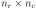
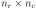
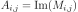
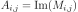

TriangularComplexMatrix¶
-
class
TriangularComplexMatrix(*args)¶ Hermitian Matrix.
- Available constructors:
TriangularComplexMatrix(dim)
TriangularComplexMatrix(dim, isLower)
- Parameters
- diminteger
The dimension of the triangular matrix (square matrix with dim rows and dim columns).
- isLowerbool
Flag telling if the matrix is triangular lower (True) or upper (False). Default is True.
See also
Notes
The triangular complex matrix is filled with . It is not possible to fill the matrix from a collection of complex values (to be done later).
- Attributes
thisownThe membership flag
Methods
clean(threshold)Clean the matrix according to a specific threshold.
Accessor to the conjugate complex matrix.
Accessor to the transposed conjugate complex matrix.
Accessor to the object’s name.
Accessor to the matrix dimension.
getId()Accessor to the object’s id.
getImplementation(*args)Accessor to the underlying implementation.
getName()Accessor to the object’s name.
Accessor to the number of columns.
Accessor to the number of rows.
imag()Accessor to the imaginary part.
isEmpty()Test whether the matrix is empty or not.
Test whether the matrix is lower triangular or upper triangular.
real()Accessor to the real part.
setName(name)Accessor to the object’s name.
Accessor to the transposed complex matrix.
solveLinearSystem
-
clean(threshold)¶ Clean the matrix according to a specific threshold.
- Parameters
- thresholdpositive float
Numerical sample which is the collection of points stored by the history strategy.
-
conjugate()¶ Accessor to the conjugate complex matrix.
- Returns
- N
ComplexMatrix The conjugate matrix
 of size 
associated with the given complex matrix
of size 
associated with the given complex matrix  such as
such as
 .
.
- N
-
conjugateTranspose()¶ Accessor to the transposed conjugate complex matrix.
- Returns
- N
ComplexMatrix The transposed conjugate matrix
of size  associated with the given complex matrix such as
associated with the given complex matrix such as
 .
.
- N
-
getClassName()¶ Accessor to the object’s name.
- Returns
- class_namestr
The object class name (object.__class__.__name__).
-
getDimension()¶ Accessor to the matrix dimension.
- Returns
- diminteger
The dimension of the matrix.
-
getId()¶ Accessor to the object’s id.
- Returns
- idint
Internal unique identifier.
-
getImplementation(*args)¶ Accessor to the underlying implementation.
- Returns
- implImplementation
The implementation class.
-
getName()¶ Accessor to the object’s name.
- Returns
- namestr
The name of the object.
-
getNbColumns()¶ Accessor to the number of columns.
- Returns
- ncinteger
The number of columns of
.
-
getNbRows()¶ Accessor to the number of rows.
- Returns
- nrinteger
The number of rows of
.
-
isEmpty()¶ Test whether the matrix is empty or not.
- Returns
- isEmptybool
Flag telling whether the dimensions of the matrix is zero.
-
isLowerTriangular()¶ Test whether the matrix is lower triangular or upper triangular.
- Returns
- isLowerbool
Flag telling if the matrix is triangular lower (True) or upper (False).
-
setName(name)¶ Accessor to the object’s name.
- Parameters
- namestr
The name of the object.
-
transpose()¶ Accessor to the transposed complex matrix.
- Returns
- N
ComplexMatrix The transposed matrix
of size
associated with the given complex matrix such as
 .
.
- N
 of size such
.
of size such
. .
.